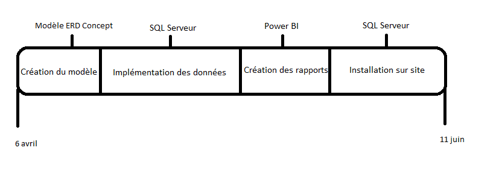

Stage dans l'entreprise de logistique internationale Hesnault
Au sein du service des douanes de l'entreprise Hesnault, j'ai réalisé un stage de 10 semaines durant lequel
j'ai réalisé un nouveau modèle de bases de données ainsi que des rapports sur Power BI accessible pour les clients qui souhaitent
questionner les données de leurs déclarations

La première étape fut de créer un nouveau modèle sur ERD Concept car l'ancien était obsolète.
Ensuite j'ai implémenté les données dans le nouveau modèle en passant par SQL Server.
Pour pouvoir répondre aux requêtes des utilisateur, j'ai réalisé des rapports sur Power BI accessibles à ces derniers.
Enfin, avec l'aide de mon maître de stage, j'ai pu installer mon modèle sur site.